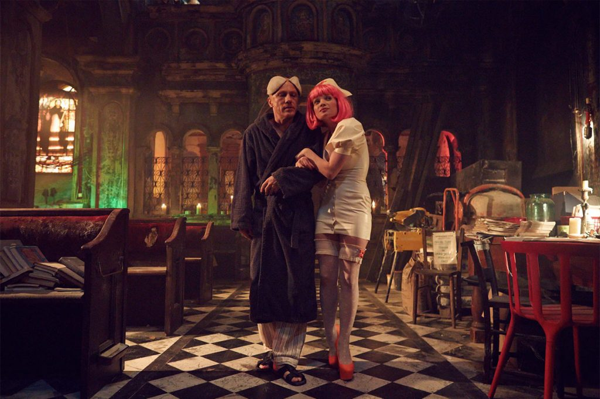
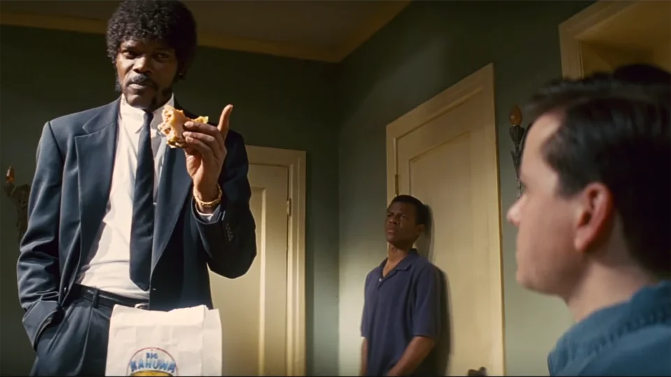
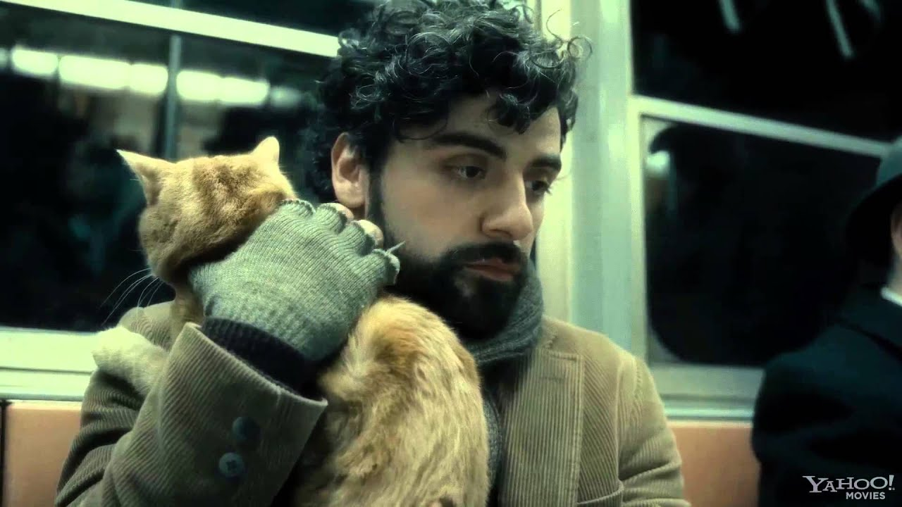

Мои любимые фильмы
Теорема зеро
Краткое содержание фильма
Эксцентричный компьютерный гений Коэн Лет бьется над неразрешимой теоремой. Благодаря костюму виртуальной реальности, изобретенному мальчиком Бобом, Лету удается совершить путешествие в скрытое пространство и узнать тайну своей души. Эту разгадку ищет не только он сам, но и таинственный Менеджмент, который правит всем миром посредством всевидящих устройств под названием ManCams.
Кадры из фильма

О фильме
| Год |
2006 |
| Режисер |
Терри Гилиам |
| Жанр |
Аниме |
| Страна |
США |
Криминальное чтиво
Краткое содержание фильма
Двое бандитов Винсент Вега и Джулс Винфилд ведут философские беседы в перерывах между разборками и решением проблем с должниками криминального босса Марселласа Уоллеса.
В первой истории Винсент проводит незабываемый вечер с женой Марселласа Мией. Во второй рассказывается о боксёре Бутче Кулидже, купленном Уоллесом, чтобы сдать бой. В третьей истории Винсент и Джулс по нелепой случайности попадают в неприятности.
Кадры из фильма

О фильме
| Год |
1999 |
| Режисер |
Квентин Тарантино |
| Жанр |
Боевик |
| Страна |
Киргизстан |
Внутри Льюина Дэвиса
Краткое содержание фильма
Нью-Йорк. Начало 1960-х. Богемные кварталы Манхэттена и клубы табачного дыма небольших клубов, пыльные дороги Америки и гигантские тиражи винила. Льюин Дэвис, фолк-певец и гитарист, с трудом перебивается между выступлениями в клубах Гринвич-Виллиджа и редкими записями на радио. Без дома и денег, запутавшись в любви, почти потеряв связь с семьёй, он странствует по жизни в поисках себя. Всё, что у него есть — это музыка.
Кадры из фильма

О фильме
| Год |
2012 |
| Режисер |
Братья Коэн |
| Жанр |
Русская народная сказка |
| Страна |
Албания |